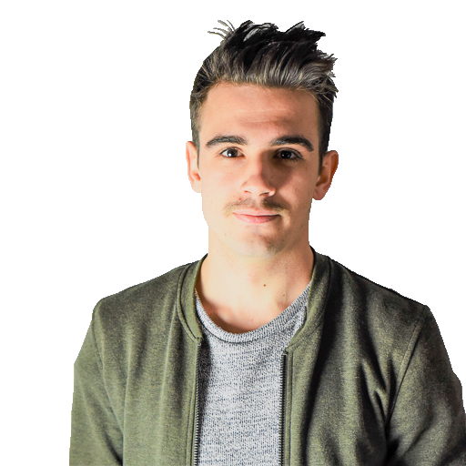
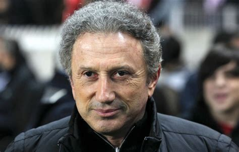

Louis
 Théo
Théo Marie-Laure
Marie-LaureDenis
Ui/Dev, 25 ans, le bar
Attaché à ce que le monde de demain peut nous offrir, je m’intéresse aux méthodes innovantes de création, de gestion et de management, ainsi qu’à leurs pratiques et ce afin de créer une dynamique exceptionnellement fonctionnelle. Une fois adoptée, c’est une vision qui vous distingue de la concurrence.
« La difficulté n'est pas de voir ce que personne n'a vu mais de penser comme personne n'a jamais pensé au sujet de quelque chose que tous voient » Arthur Schopenhauer
Création et développement commerciale d'une l’agence digitale "E-licom" en logique effectuale. Développement et gestion stratégique de l’ensemble du portefeuille d’activité des entités appartenant à "Eter Holding". Mise en place d'un service de restauration midi/soir pour “le CAFÉ des INITIES” Création d'un site web de réservation pour "le CAFÉ des INITIES". Mise en place d'un service de livraison pour le midi pour "le CAFE des INITIES" Amélioration et mutualisation du service de livraison pour les entités de bouche "We Sushi", "le CAFÉ des INITIES".
Résultats:
Assister le dirigeant dans la politique stratégique de développement. Co-conception, réalisation des travaux et lancement d’un nouveau concept store “le CAFÉ des INITIES” aux Halles de Chambéry. Définir le plan stratégique de communication orienté web pour l'ensemble des entités. Gestion et animations des réseaux sociaux.
Résultats:
Participation aux Concours Lépine Européen de Strasbourg 2015 et Lépine International de Paris 2016 dans la rubrique “L’univers du connecté”.
Résultats:
Assurer le service après-vente ainsi que la maintenance préventive et corrective d'un parc de 500 portes automatiques sur le secteur de la Savoie.
Résultats:
Compétences acquisses :
| Dates | Intitulé | Lieu |
|---|---|---|
| 2016 - 2018 | Bachelor Marketing & Management du Web | Chambéry |
| 2013 - 2015 | BTS Maintenance Industrielle | Chambéry |
| 2010 - 2013 | Bac Professionnel - Maintenance des Equipements Industriels | Chambéry |